Aqui o mar tem dono e tem calendário. No outono a tainha corre a costa, no inverno a baleia chega para parir, e o litoral guarda o jeito de viver que os açorianos trouxeram há mais de dois séculos.
No século XVIII, famílias açorianas se instalaram no litoral de Santa Catarina, na então Vila do Desterro, hoje Florianópolis. Elas já tinham na pesca uma das principais fontes de comida e de renda, e o jeito de morar delas ficou: vilas de casas enfileiradas ao longo das ruas, com a igreja de frente para o mar. A de Santo Antônio de Lisboa, a Nossa Senhora das Necessidades, foi construída entre 1750 e 1756.
Com as mulheres açorianas veio a renda de bilro, feita em almofada, com os bilros trançando os fios. Era renda de família, e vendida por intermédio das compradeiras, que levavam as peças das rendeiras até quem comprava. Hoje a herança açoriana aparece nas festas religiosas, na ratoeira, na renda e na tainha à mesa.
E é a tainha que dá o ritmo. No outono e no inverno ela migra para o norte, em grandes cardumes, atrás de água mais quente para desovar. Os cardumes saem da Lagoa dos Patos depois da passagem das frentes frias, e o frio e o vento sul empurram o peixe para perto da costa. Quando chega, a praia inteira trabalha: é o arrasto de praia, uma pesca artesanal que os açorianos trouxeram e que Santa Catarina reconheceu como patrimônio cultural em 2012.
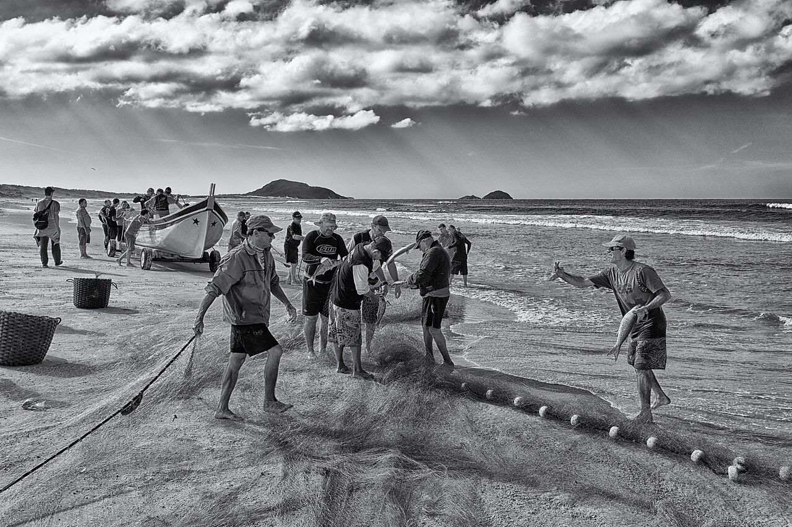
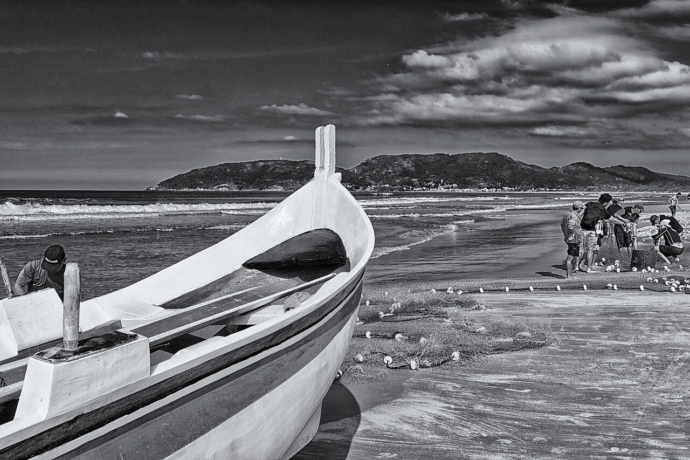
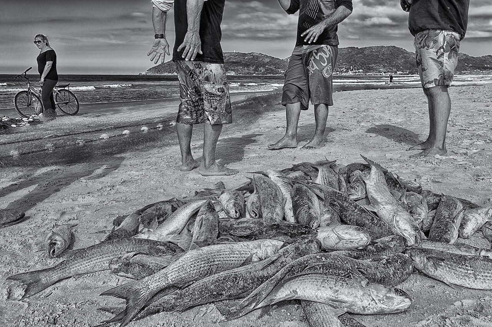
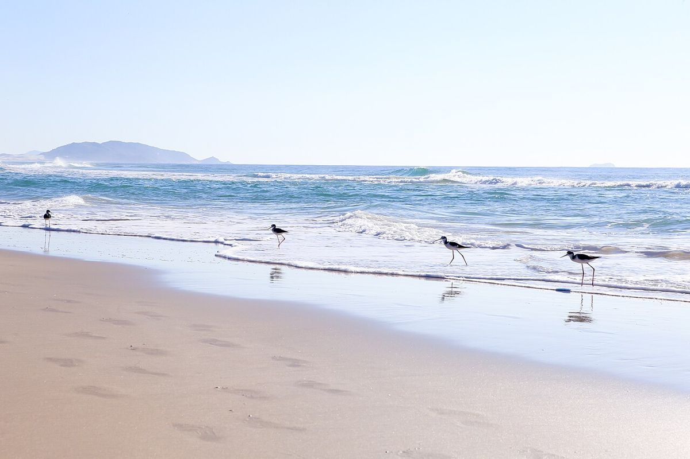
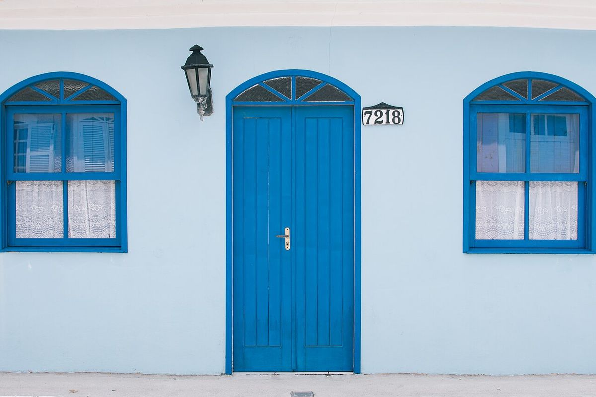
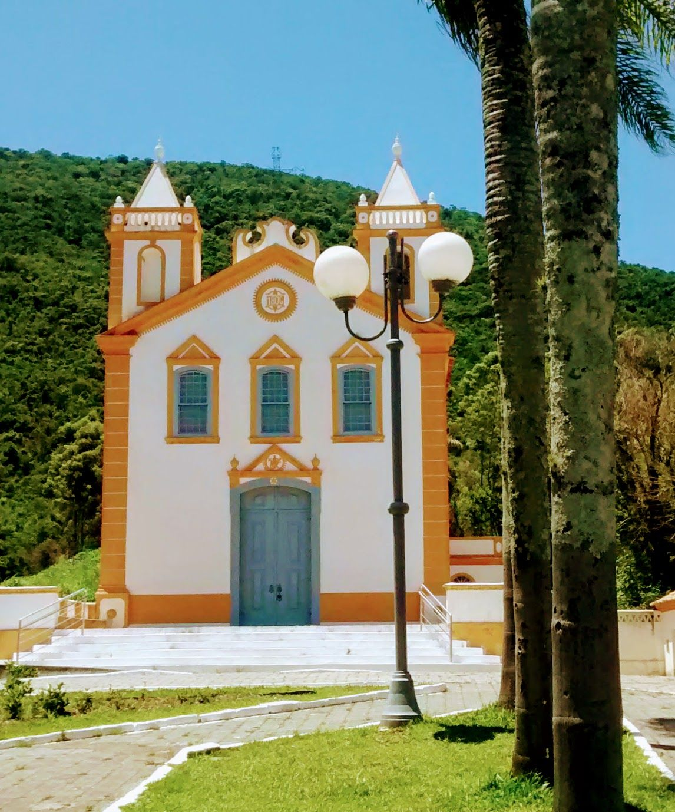
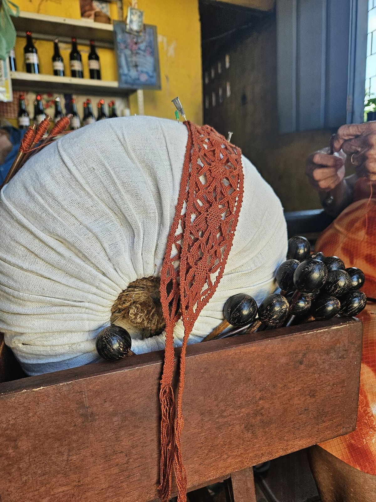
O mar de Santa Catarina também é caminho de navio. Ao norte, na Baía da Babitonga, fica São Francisco do Sul, a cidade mais antiga do estado: o navegador francês Binot Paulmier de Gonneville teria chegado ali em janeiro de 1504, e o povoamento português começou em 1658. O canal de fácil acesso da baía fez o porto crescer, e desde o fim do século XIX ele é a principal atividade da cidade.
Mais ao sul, na foz do rio Itajaí-Açu, fica Itajaí. No século XIX o porto escoava madeira para Santos e para o Rio de Janeiro; no século XX vieram a pesca industrial e a construção naval, e a cidade virou um dos maiores portos pesqueiros do Brasil. Junto com a Portonave, na outra margem do rio, forma hoje um dos maiores complexos de contêineres do país. É desse vaivém que vem o cargueiro que passa no horizonte do jogo.
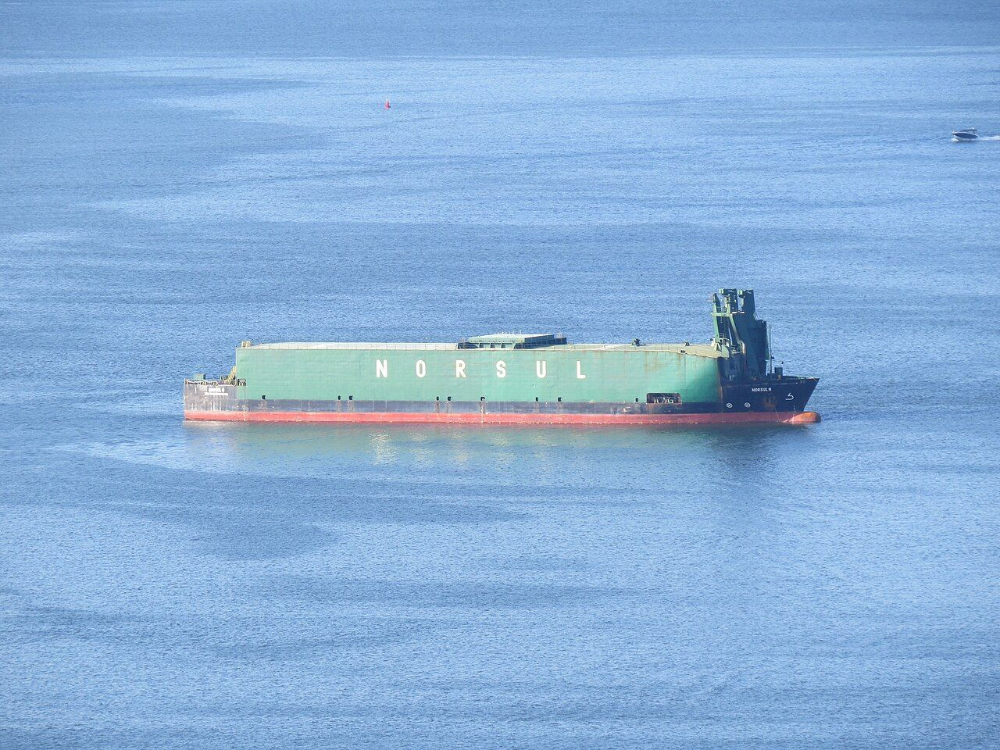
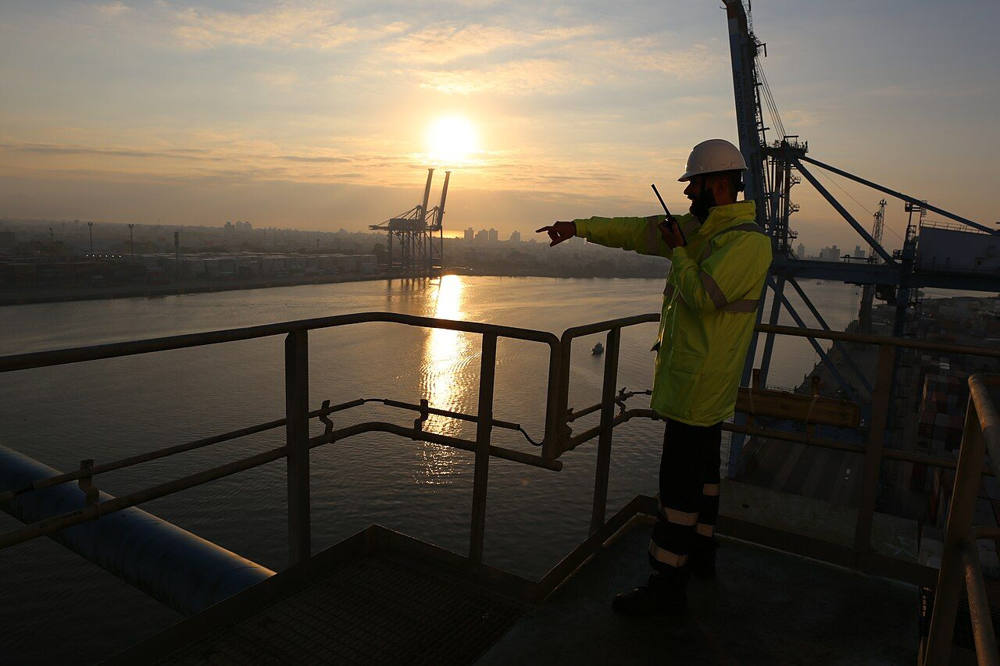
A Costa do jogo junta costão, praia e ilha, com o casario açoriano, a igrejinha e o farol. Algumas dessas peças têm uma história de verdade por trás.
O desenho das vilas açorianas é o da igreja de frente para o mar, com as casas dispostas pelas ruas em volta. Em Santo Antônio de Lisboa e no Ribeirão da Ilha, em Florianópolis, esses centros históricos existem até hoje.
É aqui que o arrasto de praia acontece. Os vigias, ou olheiros, ficam nos costões ou na faixa de areia, acompanhando os cardumes. Quando o peixe se aproxima, avisam os pescadores, que esperam prontos para entrar no mar e fechar o cerco.
Antes de virar símbolo de proteção, a baleia-franca foi o motor de uma economia. Santa Catarina teve armações baleeiras desde 1746, e a caça durou até 1973, em Imbituba. A antiga armação de Imbituba, de 1796, hoje abriga o Museu da Baleia.
Ave aquática que come principalmente peixe e caça na água, sozinha ou em grupo, conforme a fartura de presas. Tem os pés com membrana entre os dedos. Em estudos no Rio Grande do Sul, peixes de fundo, como bagres e corvinas, foram as presas mais importantes.
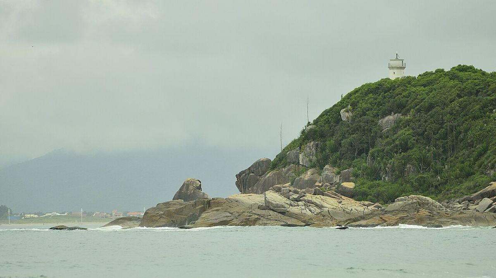
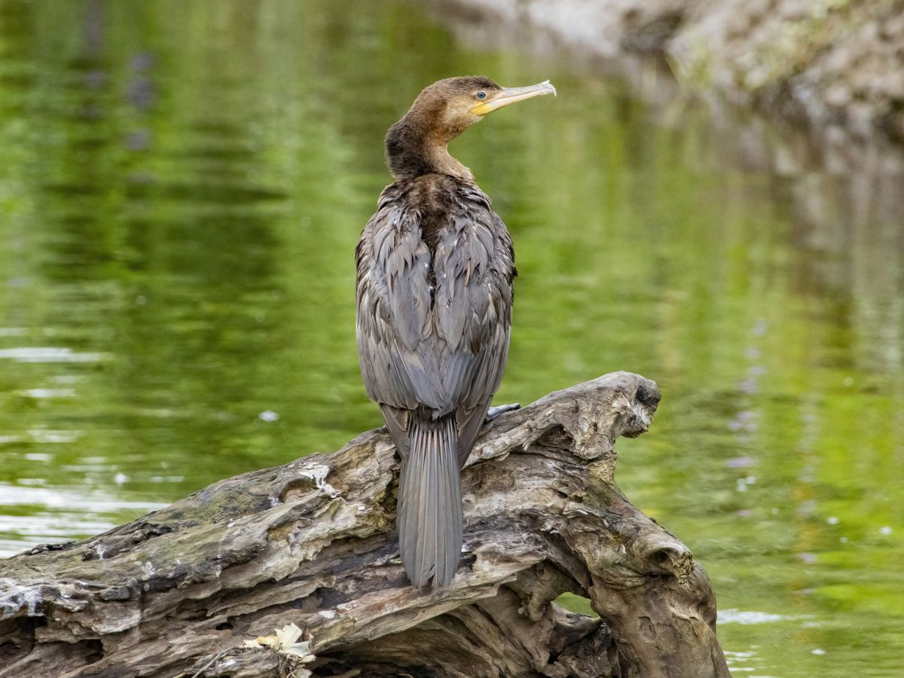
Doze peixes do mar de Santa Catarina no jogo, do mais comum ao mais raro. Quando o nome popular vale para mais de uma espécie, o cartão avisa.
Peixe pequeno de costa, de até 27 centímetros. Vive em cardumes compactos, entre 5 e 60 metros de profundidade, e é pescada para consumo fresco e em conserva.
Na costa catarinense, é o nome da tainha pequena, parente da tainha de verdade. Come algas, vive em cardumes em praia de areia, lagoa e estuário, e desova entre março e agosto, soltando milhões de ovos no mar. Também é chamada de tainha-branca.
Corpo comprido e achatado, que afina até uma ponta, sem nadadeira caudal e sem nadadeiras pélvicas. Fresco, é azul metálico com reflexos prateados. Come peixe, lula e crustáceo, e à noite sobe para perto da superfície.
A estrela do litoral catarinense. Chega a 80 centímetros, come algas e matéria orgânica do fundo e anda em cardumes enormes. No outono e no inverno viaja para o norte para desovar, e é ela que o arrasto de praia espera. Já foi chamada de Mugil platanus, mas estudos genéticos mostraram que é a mesma espécie.
Pampo é nome de peixes do gênero Trachinotus. No sul do Brasil e até o norte da Argentina vive o Trachinotus marginatus, de até 45 centímetros. Nas praias do Rio Grande do Sul, ele foi o peixe mais comum numa pesca de rede feita na arrebentação.
Vive perto do fundo, de areia e lama, em água costeira e em estuário, onde ficam os berçários. Os filhotes comem crustáceos e moluscos do fundo, e o adulto também, e de vez em quando pega um peixe. Forma cardumes e faz migrações com as estações.
Também chamada de enchova. Caça em grupos soltos e ataca cardumes de tainha e de outros peixes, matando muito mais do que precisa para comer. Gosta de praia de arrebentação e de costão, em água limpa e agitada, e no inverno migra para águas mais quentes. É peixe esportivo querido.
É um dos robalos do Brasil, e o robalo-peva é outra espécie, o Centropomus parallelus. Os dois vivem em água costeira e em estuário, perto de manguezal, e chegam até Santa Catarina. O robalo-flecha come peixe e camarão e, de maio a setembro, os adultos se reúnem na foz de rios para desovar.
Peixe de recife, de até 1,9 metro. Os adultos ficam em recifes fundos voltados para o mar e comem sobretudo peixe, além de invertebrados. Os pequenos vivem perto de plantas e detritos flutuantes no mar aberto, e a desova é no verão, perto da costa. Há relatos de intoxicação por ciguatera ao comê-lo.
A garoupa-de-dorso-escuro nasce fêmea e pode virar macho entre os 12 e os 17 anos. Os adultos vivem sozinhos, no fundo rochoso, e defendem o território. Comem caranguejo e polvo, e os maiores também comem peixe. Podem passar dos 50 anos.
Peixe de mar aberto, de água azul funda, que come peixe e lula e atravessa o Atlântico em longas viagens. Chega a três metros. As costas são azul-escuras, as laterais prateadas com manchas marrons. É peixe de pesca esportiva.
O maior do mapa: pode chegar a cinco metros de comprimento e passar de seiscentos quilos. Vive em mar aberto, em geral sozinho, caça peixe, polvo e lula de dia e viaja longas distâncias. A IUCN o classifica como vulnerável à extinção, desde a avaliação de 2021.
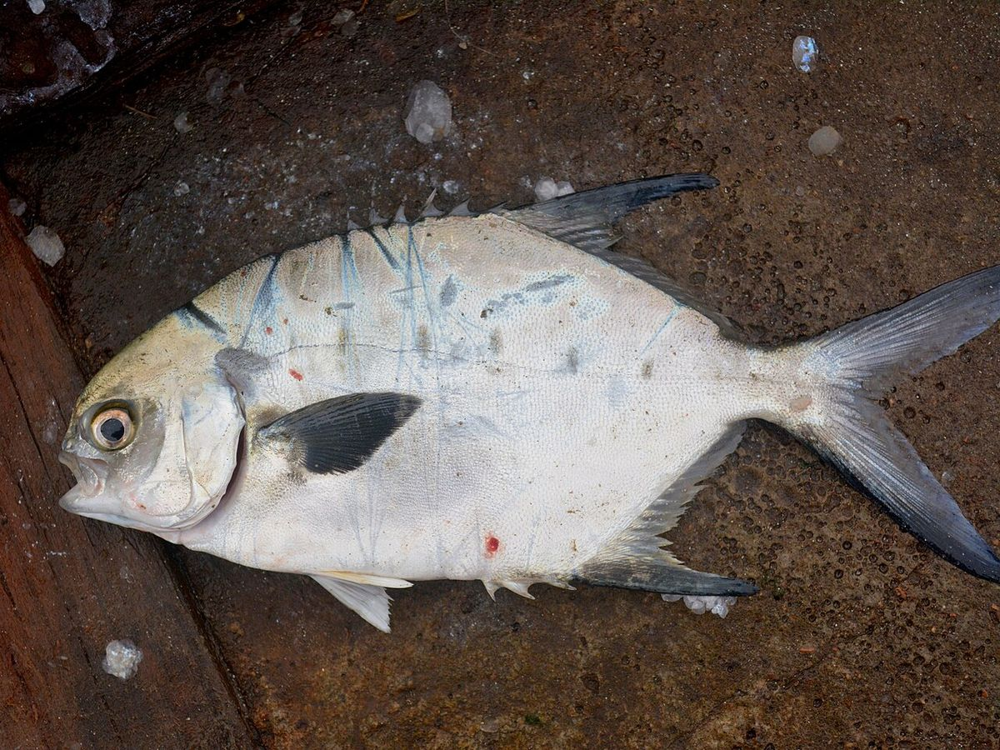
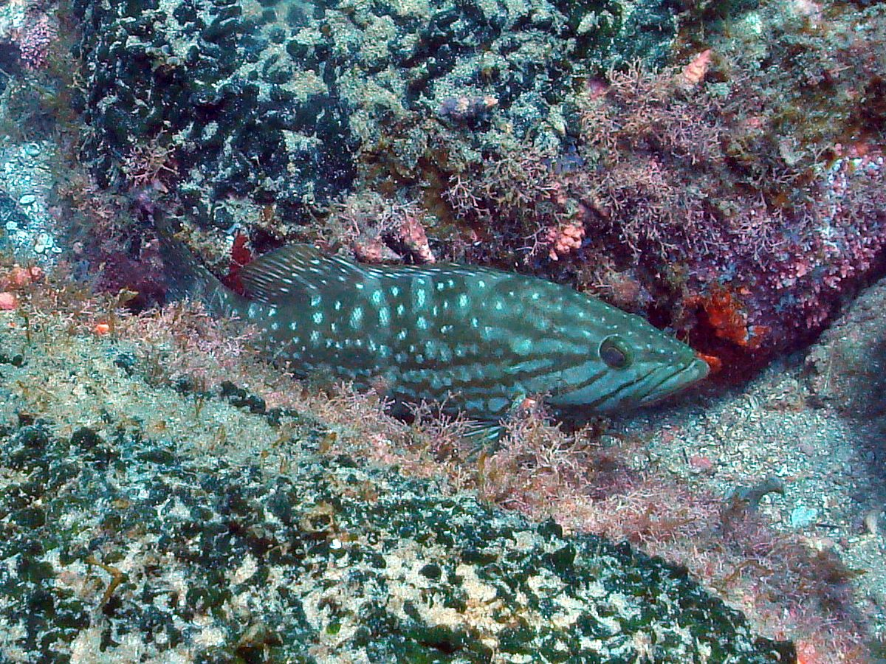
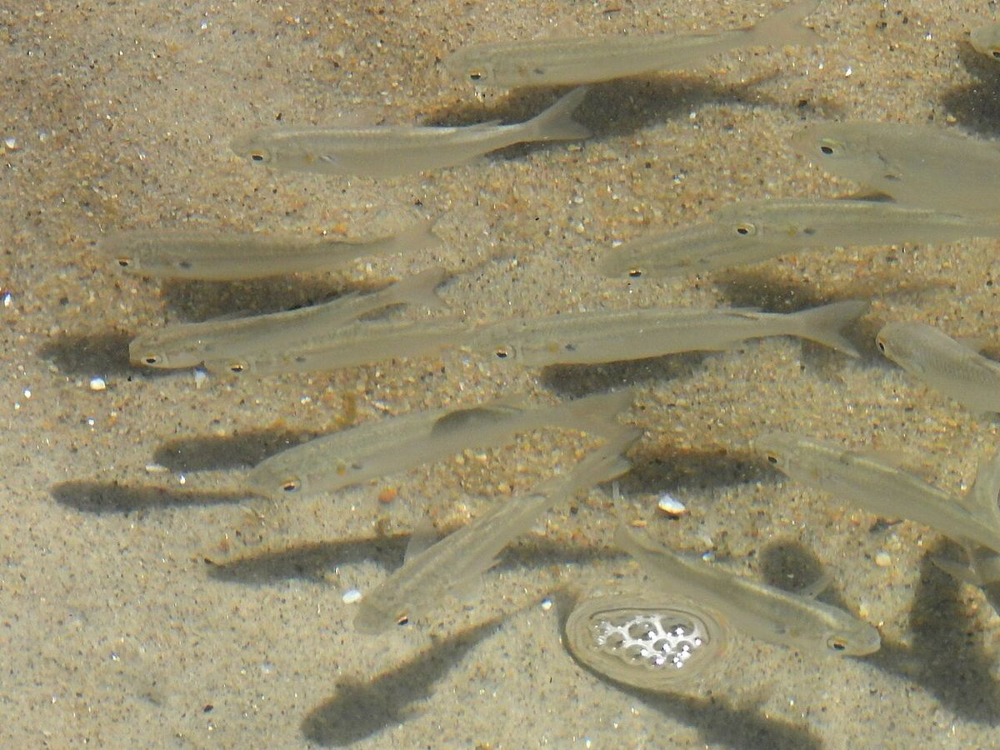
De julho a novembro, a costa catarinense vira ponto de encontro das baleias-francas-austrais (Eubalaena australis). Elas vêm para acasalar, parir e amamentar em enseadas e baías pequenas e protegidas, onde não há predador natural. Boa parte dos grupos que se veem perto da praia são fêmeas com filhote.
Houve um tempo em que a história era outra: a baleia-franca era caçada nas armações, e a caça acabou de vez só em 1973. Hoje o litoral que antes as perseguia cuida delas. Em 2000 foi criada a APA da Baleia Franca, que protege mais de 150 mil hectares de costa, do sul da Ilha de Santa Catarina até o Balneário Rincão. Na lista de bichos que ela protege estão a própria baleia-franca, a toninha e as tartarugas-cabeçuda e verde.
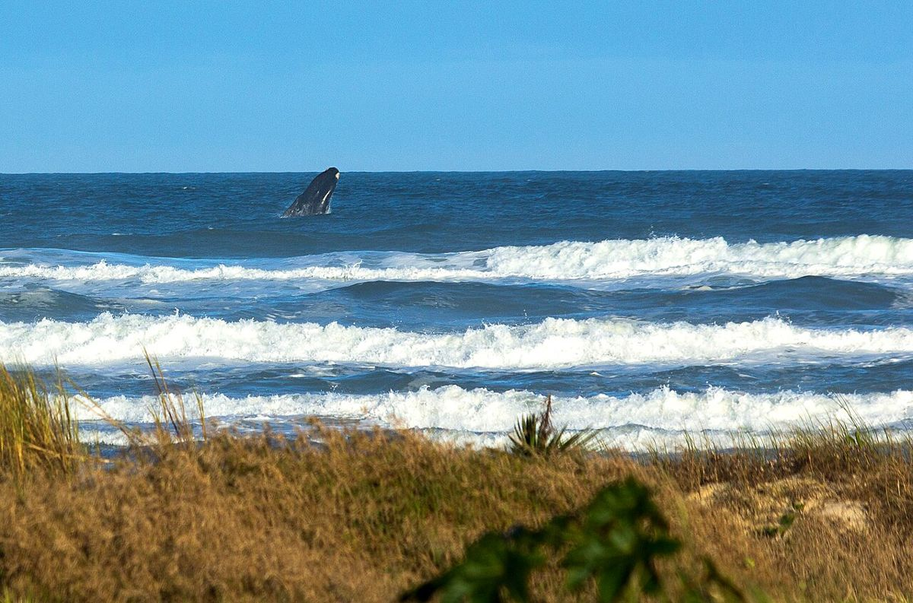
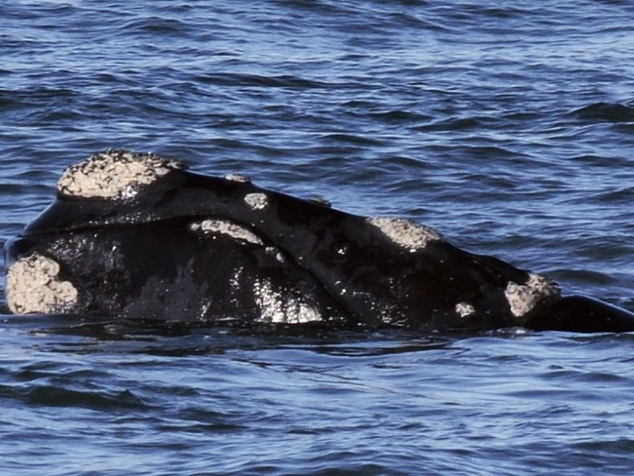
Quem cuida das baleias na pesquisa e na escola é o Instituto Australis, que toca o ProFRANCA, o Projeto Franca Austral (o Projeto Baleia Franca): pesquisa, monitoramento e educação ambiental sobre a baleia-franca-austral e os ecossistemas marinhos do sul do Brasil. O projeto mantém o Centro Nacional de Conservação da Baleia Franca, em Itapirubá Norte, em Imbituba, que recebe visitantes, e tem a campanha Adote uma Baleia, além de um programa infantil, o ABC do Franquinho. Setembro é o Mês da Baleia Franca, quando a temporada chega ao auge. Foi também uma parceria do projeto com a prefeitura que, em 2003, transformou a antiga armação de Imbituba no Museu da Baleia.
Quer conhecer o trabalho deles? O site é baleiafranca.org.br.
O arrasto de praia da tainha guarda a tradição, e hoje também tem limite: desde 2025, essa modalidade tem cota de captura, e o presidente da Fepesc conta que o arrasto depende de vento sul e mar calmo. Um relatório de 2023 apontou que o estoque da tainha estava abaixo do nível sustentável.
O marlim-azul é considerado vulnerável à extinção. É peixe de mar aberto, que viaja longas distâncias, e por isso a pesca dele precisa de cuidado.
E, na temporada das baleias, o que cabe a quem vai à praia é olhar de longe: elas estão ali para cuidar dos filhotes.
Todas do Wikimedia Commons, com licença que permite uso comercial. Foram reduzidas para a página.


.jpg){kind=link}


.jpeg){kind=link}